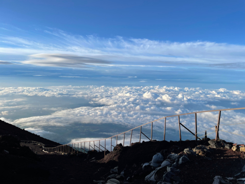

In this entry, I will be applying some of the skills that I learned in MichaelGonchar's article from my previous entry (below).
Here is a photo I took in while cross country skiing in Oregon!
Fig 1. Goodfriend, Bend, Oregon
This photo is interesting for a number of reasons. For starters, the moon is present against a vibrantly blue sky. I took this photo in the early evening after a long day of skiing and hiking. Once I got over the hill in the photograph, and through the trees, I set up camp. The snow ahead is a bit rough, and more importantly it's not too deep, which makes it perfect for traveling on skis. This photo was taken at very end of an exhausting day, and to me it consitutues a very peaceful memory.
This photograph relates to my overall topic for our DES 157A Studio 2 project, which is outdoor photography! Obviously this was taken outside, but it's also nice to include snow activities and snowy landscapes in my outdoor photography collection because the snow is beauitful!
I feel like this photo shows that I have an appreciation for nature (the trees are beautiful, and the moon showing in the photo is lovely, I'm so glad I got a photo of this!), and also that I'm generally and outdoorsy / adventurous person!
Here is a photo that my friend Taira shared with me, without giving any information / context about the photo

Fig 2. Taira, Location Unknown
Like my image, this photograph is definitely in the context of some sort of outdoor excurrsion / mountain climb. The scenary is striking, with the largest section of the photograph being a vast view of the sky, and a view of land far, far below.
The foreground consists of a rickety looking fence, which separates the photographer and the viewer from the cliffs edge with very minimal protection...
There's something really daring about this photo, and it makes me wonder how Taira got here (hiking? driving some distance? biking some distance?), and what is on the other side of Taira that we aren't seeing. There's a paved path down at the bottom of the photograph, but it looks like it ebbs away by the time we get to where Taira is standing. Is he at some pivotal, on foot point in the climb?
This photograph is awesome! And it proposes so many questions to the viewer that can't be explained outright, and canont even be asked without taking a closer look at the details!
Thanks for reading!
Visual Thinking
Michael Gonchar's article, "10 Intriguing Photographs to Teach Close Reading and Visual Thinking Skills", was incredibly insightful and fun to read. In the article, Gonchar offers adivce like "notice details", "practice regularly" and "start conversations". These tips might seem like obvious things to do, but in reality, they require more energy than you would assume, and they also require (and improve upon) critical thinking skills
Goshnar focuses is on how students can look more closely and think in more depth about the material they come across. His approaches resonate with me as a design student. Design is in large part about finding unqiue solutions to problems (be it artistic, mechanical, etc...) we come across. If I can hone in on the details of the things I come across in my design work, I'll be able to have a better understanding of what I'm dealing with.
Lots of details and knowledge that could make a difference on how we see things aren't always blatantly told to us in the things we view. It takes thoughtful analysis of visual literature to reach conclusions and come up with interesting ideas/questions.
Here is a link to MichaelGonchar's article in case you'd like to check out more of the advice he has to offer on form visual thinking and exploring visual literature!
After reading this article, I went and found a website that I found particularly interesting after looking at it closely. It's called Atomic Health, and my favorite thing about the website is the interactivity. The scroll is slightly delayed, which makes it feel smooth. The visuals are great guiding keys, and the hover options are ingenuitive and satisfying. The website has a lot of information, but it relays it effectively! Elements on the page interact with one another – like the header and the pictures. There's so much going on, but it feels like a very consise site, and there are so many small details that make it fun to use.
Overlays: Do's and Dont's
Kathryn Whitenton's article, "Overuse of Overlays: How to Avoid Misusing Lightboxes", is a great resource for understanding how overlays should be used. Whitenton is very clear about the fact that developers should never use overlays that contain a large amount of content, or overlays that use multiple anchor tags/navigation tools.
Overlays must also be meticulously created, with careful consideration given to the possibility of bugs. An overlay that makes a page inaccessible (something I have come across a surprsing number of times on the web), is just about the most frustrating user experience out there!
Developers should seriously consider qualities of the overlays they utilize: like where an overlay will actually appear on a page, whether or not it will interrupt a user (do more harm than good), and consider why the information should be in an overlay rather than simply inforamtion on the main page.
But it's also clear that there are appropriate times to use overlays! They make great warnings (like popping up before a user takes an irreversible step), they can convey serious information (as they are extremely noticeable), and they can be used to gather small amounts of user data.
Here is a link to Kathryn Whitenton's article in case you'd like to check out more of the advice she has to offer on the proper (and improper!) use of overlays!
Form Design
Salim Ansari's article, "Best practices for form design", has a lot of useful insights and tips for helping developers design user friendly forms.
There were so many tips that I found to be incredibly helpful, especially for encourageing form completion. For example, Ansari emphasizes the "less is more" principle – developers should only be asking for & including essential information on a form.
When a form is too crowded with information, or hard to navigate, I personally find myself being discouraged from filling it out.
Likewise, Ansari points out how the use of percentage complete bar or a form completion tracker of some kind can encourage usability.
Forms are usually not exciting or fun to fill out, and allowing users to know how close they are to the end (eliminating the uncertainty that the form will go on forever...) can keep a user going until the form is finished.
A form that I used recently that is very user friendly is the DMV Drivers License Replacement Form... Although I did unfortunately have to lose my DL in order to come across this example ¯\_(ツ)_/¯
This form is fairly short & to the point, easy to navigate, and it has good formatting, spatial awareness, and a neat and sequential order!
Here is a link to Salim Ansari's article in case you'd like to check out more of the advice he has to offer on form design practices!